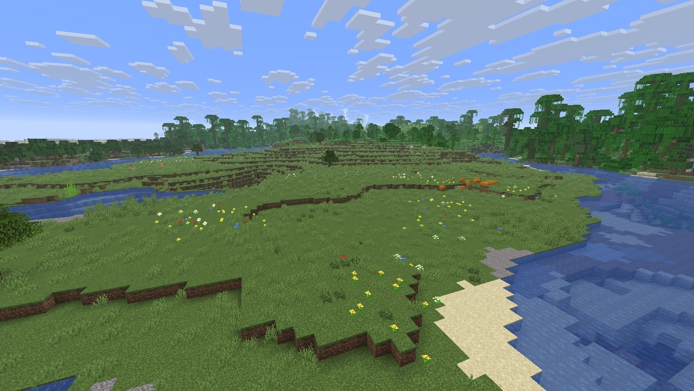
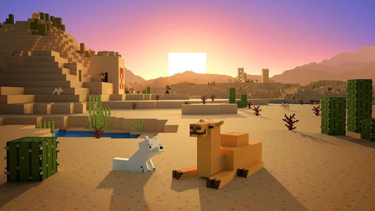
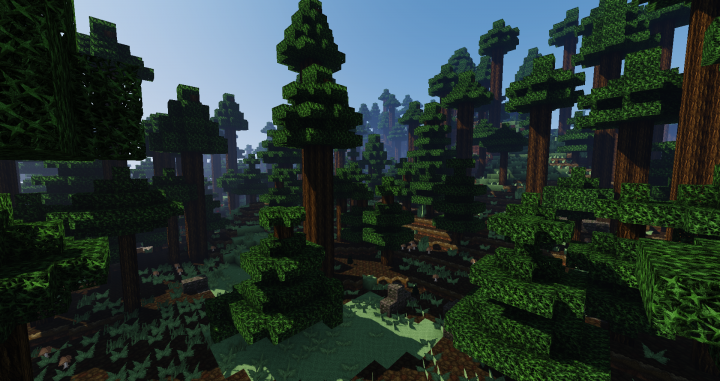
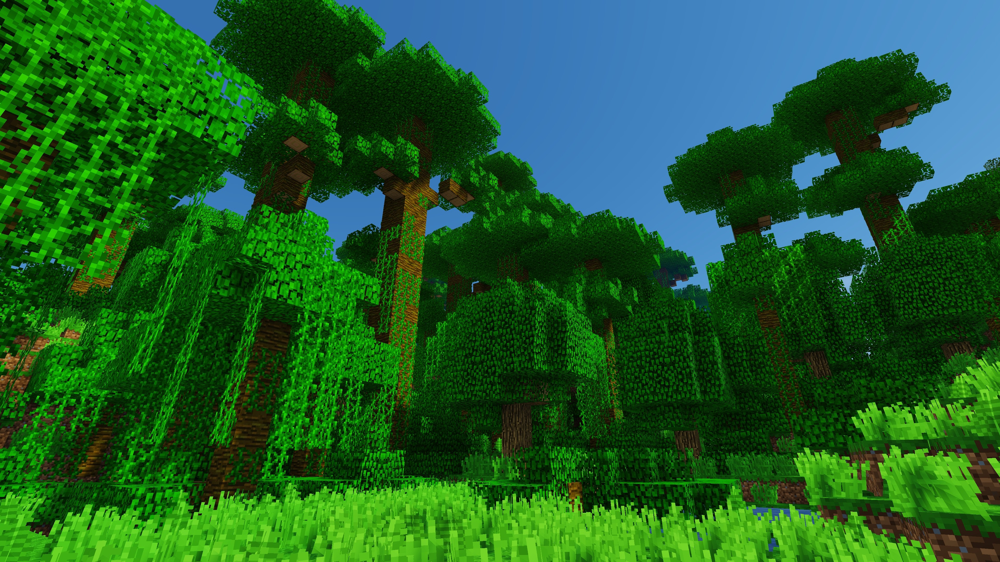
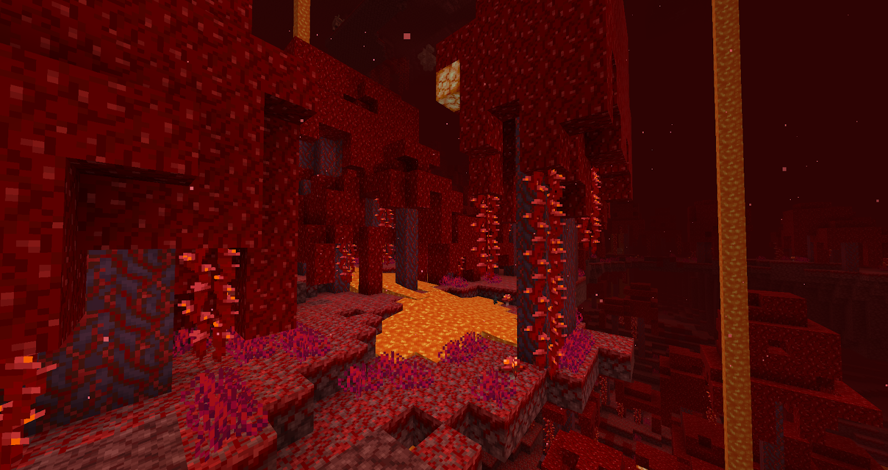

-

Planicie (Plains)
Ecosistema extenso y totalmente plano cubierto por un verde manto de hierba. Es una de las regiones más amigables para comenzar una partida, ya que ofrece una visibilidad despejada y la facilidad de edificar grandes estructuras sin necesidad de aplanar el terreno. Además, en este bioma es muy habitual encontrar aldeas pobladas por aldeanos, así como animales domésticos como caballos, vacas y ovejas para abastecerte de alimentos y recursos básicos.
-

Decierto
Vasta extensión de tierra árida dominada por dunas de arena, cactus y arbustos secos. En este entorno extremo no llueve y conseguir comida representa un verdadero desafío; sin embargo, atrae a los exploradores debido a las valiosas pirámides o templos del desierto que ocultan cofres llenos de tesoros. También alberga pozos de agua y a los peligrosos cadáveres (husk), una variante de zombi adaptada al calor que no se quema bajo la luz solar directas.
-

Bosque
Región arbolada y repleta de vegetación compuesta principalmente por robles y abedules. Resulta el entorno ideal durante los primeros días de aventura, pues te permite recolectar grandes cantidades de madera y fabricar tus primeras herramientas. Cuenta con una gran variedad de flores coloridas y refugio natural, aunque la sombra proyectada por las copas de los árboles puede favorecer la aparición inadvertida de criaturas si no mantienes la zona bien iluminada.
-

Selva
Bioma tropical frondoso y tupido caracterizado por sus gigantescos árboles de jungla entrelazados con lianas, melones silvestres y densos parches de bambú. Se trata del único lugar del juego donde habitan animales emblemáticos como pandas, loros y ocelotes. Entre su intrincada vegetación se ocultan los antiguos templos de la selva, construcciones de piedra repleteras de trampas con flechas y acertijos de redstone que protegen valiosos botines.
-

Bosque Carmesí
Inquietante y peligroso ecosistema que se sitúa exclusivamente en la dimensión infernal del Nether. Destaca visualmente por su vegetación de tonos rojos intensos, niebla espesa y enormes hongos carmesí que se elevan a modo de árboles. Es un territorio hostil habitado por destructivos hoglins y tropas de piglins que patrullan el terreno, requiriendo que los jugadores lleven al menos una pieza de armadura de oro para evitar ser atacados de inmediato.